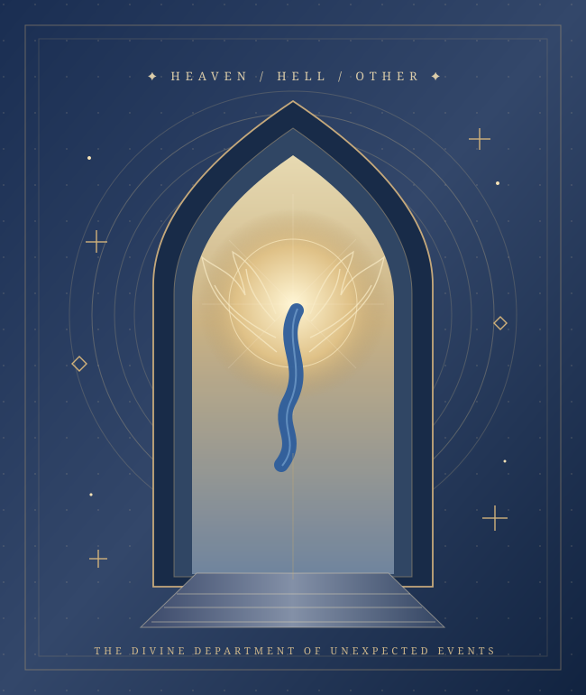

WHITE THEORY ORIGINAL STORIES ✧
A DIVINE COMEDY IN A BOTTLE
THE
SACRED
ABSURD.
เรื่องศักดิ์สิทธิ์ที่ไม่มีใครขอให้เกิด
สวรรค์มีระเบียบ นรกมีฝ่ายบัญชี
ส่วนมนุษย์คนหนึ่ง...มีสูตรน้ำหอมและคำถามที่ไม่มีใครอยากตอบ
แฟนตาซีคอมเมดี้ว่าด้วยเทวดา ปีศาจ แฟรี่ ความรัก และความวุ่นวายที่แม้แต่พระเจ้าก็ไม่อาจอนุมัติล่วงหน้า
LATEST EPISODEตอนที่ 253 / PERHAPS, ONE DAY✶ 34 ACTS / 253 EPISODES / ONE GLORIOUS MESS

BOOK / IA LITTLE HOLY. A LOT OF TROUBLE.01 / SOMEWHERE BETWEEN HEAVEN & HELL
THE PREMISE / 00
When the divine
meets the ridiculous.
เรื่องทั้งหมดอาจเริ่มจากกลิ่นหนึ่งกลิ่น แต่ไม่มีใครรับประกันได้ว่ามันจะจบที่แค่ขวดน้ำหอม
พบกับโลกที่ความศักดิ์สิทธิ์ต้องแชร์โต๊ะประชุมกับแผนการตลาด และความรักมักเกิดในจังหวะที่ไม่เหมาะสมที่สุด
สำรวจทุก ACT